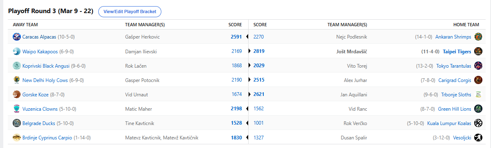

2025/26 - Fantasy Koroška - sezona 9
Playoff Round2 - Semifinals (Mar 9 - Mar 22)

Recap: Semifinals
22 tednov sezone je že za nami in ostala sta nam le še 2 najpomembnejša. V tem ne preveč zanimivem polfinalnem terminu smo zmagovalce tako rekoč
vseh matchupov dobili že precej hitro. Najmanjša razlika je znašala 161 točk, najvišje pa so skoraj dosegle štirimestne vrednosti. Porabljenih je bilo
okroglih 400$ in ker sredstev konec sezone ne izplačujemo na TRR, je zdaj še zadnja priložnost, da se jih znebite :D
V napetejšem polfinalnem paru je krajši konec potegnil Cicko. Najbolje razpoloženo moštvo tekom rednega dela je svoj kriptonit v obliki Caracas Alpacas
prvič srečalo v zadnjem krogu regular seasona, ko je Herko utišal svojega višinsko enakovrednega kompanjona in mu prizadejal šele prvi poraz, po kar 14
zaporednih zmagah. Toda Nejca, ki je pred tem Alpake oklical za "ŠVAS SQUAD", je kakopak udarila Karmica še enkrat in prav ta švas squad mu je preprečil
naskok na še 2. naslov prvaka. Zdaj bo priložnost za to dobil Herko, ki je s svojim uspešnim streamanjem uspel nadoknaditi izostanek Puščavskega Pitbulla
Brooksa in pa letos izvrstnega Moranta, ter se uvrstil v finale. Zdaj ima celo priložnost postati povprečno najboljši manager v ligi, v kolikor osvoji naslov,
Aleks pa izgubi obračun za 5. mesto.
Toda s temi side questi se seveda Gašper ne bo utegnil ukvarjati ... polne roke dela bo namreč imel s Taipejskimi Tigri. Po tem ko je predlani moral v finalu priznati
premoč tedaj še Bundoranskim Kobram in je lani imel vsekakor ekipco za naskok na vrh, pa so mu jo zagodle številne poškodbe in krvni strdki, pa je Jole dobil še eno
priložnost in ni vrag, da v tretje ne gre rado. Tole je bila za Tigre že 11. zaporedna zmaga in velja omeniti, da je povprečno nasprotnike odpravljal s kar 331 točkami
razlike. Vse skupaj vendarle ne bo vredno nič, če se Tigersi v zadnjih 2 tednih ne zberejo in opravijo dela do konca. V polfinalu mu je nasproti sicer stal Ilja, ki pa je
kaj kmalu ugotovil, da resnih možnosti nima in se je z veseljem sprijaznil tudi z obračunom za tretje mesto. To bo vsekakor zelo lep uspeh po lanski klavrni sezoni in
Dili je očitno že precej ugrifan v svoji drugi sezoni, medtem ko nekateri niso še niti v svoji deveti. Pohvalno!
Zdaj je že znano, da se bo na večni lestvici nekdo izenačil z Jurharjem s svojo drugo titulo, počakati pa bo treba 14 dni, da vidimo kdo to bo. Bo to poveljnik
švas squada, večno konsistentni in nevarni Gašper Herkovič s svojimi Alpakami? Ali pa je vendarle napočil čas, da GM Jole po moštvu KK2390 do naslova prvakov
popelje še Taipei Tigerse? Stay tuned!
V ostalih matchupih, ki zdaj seveda niso v prvem planu, smo videli prepričljive zmage Freda, Kupsa, Maherja in Tajna, nekoliko se je namučil le Vito, pa tudi tisto ni
bil ravno nailbiter. Zdaj je jasno, da se bosta za 5. mesto udarila Fred in Vito, za 7. mesto bomo spremljali dvoboj med Kupsom in Lačnom, za 9. pa Geps vs Maher.
Izven deseterice se bo po lanski anomaliji in tituli znašel trenutno še aktualni prvak Verčko, ki bo poskušal osvojiti vsaj 13. mesto v boju z Rancem, vmes pa smo
pozabili le še na obračun med Urnautom in Tinki Binkijem, ki se bosta pomerila za 11. mesto. G. Orla in G. BergKoniga pa ne bi ponovno izpostavljali, kajti mrtvih konjev
ne radi brcamo.
To je torej to za še predzadnji recap sezone, srečno vsem v poslednjem matchupu in naj zmaga najboljši in ne manj poškodovani. Ne pozabite še na predictione in piknik. LPLMJM13
Best memes